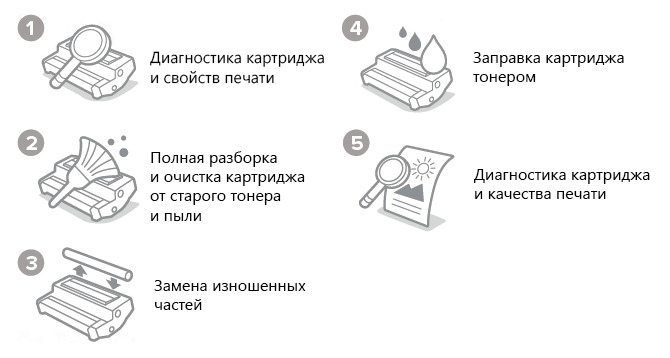
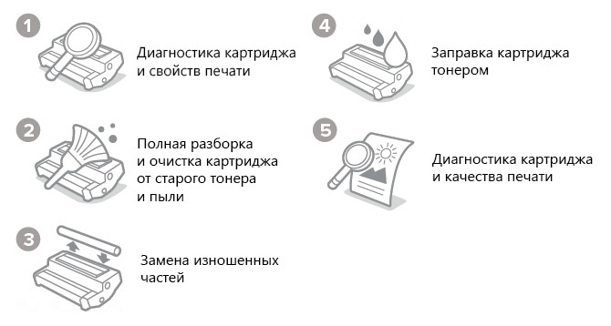

Заправка картриджей
Заправка и восстановление картриджей - одно из главных направлений деятельности сервисного центра «X2X» в Усть-Каменогорске.
Отличительной особенностью наших услуг - это Профессионализм. Мы занимаемся заправкой и восстановлением картриджей для лазерных принтеров более 25 лет. За этот срок нами заправлено огромное количество картриджей. Заправка и восстановление картриджей производится на профессиональном оборудовании хорошо обученным персоналом.

Если будет нужно перепрограммировать картридж принтера или МФУ мы можем предложить прошивку принтеров Samsung для того, чтобы их можно было заправлять, как и другие картриджи. При последующих заправках картриджей прошивка принтера или мфу избавит вас от траты денег на дорогие чипы либо покупку новых картриджей!
Наш сервисный центр занимается комплексным обслуживанием оргтехники и у нас вы можете сразу отремонтировать принтер и заправить картридж. Производим заправку картриджей к принтерам Canon, HP, Samsung, Xerox, Riso, по заправке других производителей вы можете узнать, позвонив к нам.
В своей работе мы используем только качественные и проверенные расходные материалы (тонер, валы, ракели...), стараясь при этом, чтобы наши цены были удобными для вас.
Чтобы восполнить тонер в вашем картридже достаточно позвонить в наш офис, либо оставить заявку на сайте и в ближайшее время наш специалист приедет к вам и заправит картридж либо на месте либо заберет в офис и после привезет заправленным на ваш
Заправку картриджей мы проводим чисто и качественно как в сервисе так и на дому.
Если вы не знаете как достать картридж из принтера, посмотрите это видео:
Если вы не смогли достать картридж принтера, можете привезти принтер или вызвать нашего заправщика на дом или в офис - у нас производится выезд мастера по Усть-Каменогорску.
Отличительной особенностью наших услуг - это Профессионализм. Мы занимаемся заправкой и восстановлением картриджей для лазерных принтеров более 25 лет. За этот срок нами заправлено огромное количество картриджей. Заправка и восстановление картриджей производится на профессиональном оборудовании хорошо обученным персоналом.
Заправка картриджей
Предварительную проверку с целью выявления необходимости проведения каких-либо дополнительных работ (по согласованию с клиентом), полную разборку, очистку всех деталей от тонера с помощью спецсредств, замену смазок, проверку уплотнителей, заправку тонером, сборку и контрольную проверку.
Если будет нужно перепрограммировать картридж принтера или МФУ мы можем предложить прошивку принтеров Samsung для того, чтобы их можно было заправлять, как и другие картриджи. При последующих заправках картриджей прошивка принтера или мфу избавит вас от траты денег на дорогие чипы либо покупку новых картриджей!
Наш сервисный центр занимается комплексным обслуживанием оргтехники и у нас вы можете сразу отремонтировать принтер и заправить картридж. Производим заправку картриджей к принтерам Canon, HP, Samsung, Xerox, Riso, по заправке других производителей вы можете узнать, позвонив к нам.
В своей работе мы используем только качественные и проверенные расходные материалы (тонер, валы, ракели...), стараясь при этом, чтобы наши цены были удобными для вас.
Заправим быстро
Заправка и восстановление картриджей осуществляется в нашем техническом отделе и занимает всего 15-20 минут!Чтобы восполнить тонер в вашем картридже достаточно позвонить в наш офис, либо оставить заявку на сайте и в ближайшее время наш специалист приедет к вам и заправит картридж либо на месте либо заберет в офис и после привезет заправленным на ваш
Заправку картриджей мы проводим чисто и качественно как в сервисе так и на дому.
Заправка картриджа на дому
Заправка картриджа в заправочной станции
Если вы не знаете как достать картридж из принтера, посмотрите это видео:
Как вытащить картридж из принтера HP 1010,1018
Как достать картридж из принтера Xerox 3220
Если вы не смогли достать картридж принтера, можете привезти принтер или вызвать нашего заправщика на дом или в офис - у нас производится выезд мастера по Усть-Каменогорску.